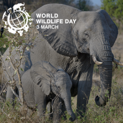

CONSERVATION
WILDLIFE
MAR 03, 2016
The United Nations established World Wildlife Day on March 3rd to recognize the day that the Convention on International Trade in Endangered Species of Wild Fauna and Flora (CITES) was signed in 2013. This year's theme...